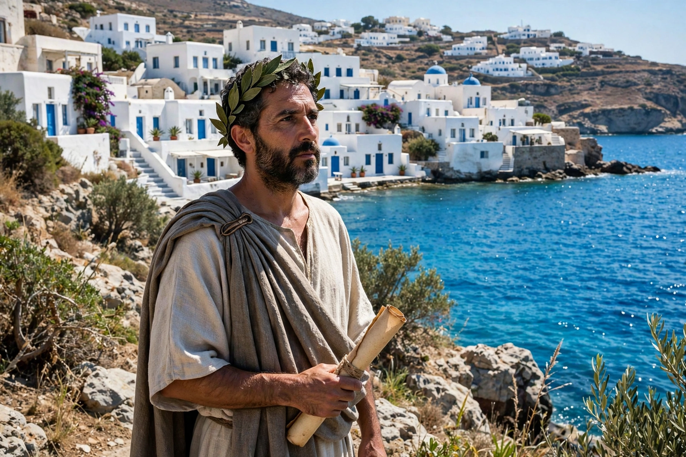

Odysseas Elytis (born Odysseas Alepoudelis; November 2, 1911 – March 18, 1996) was a Greek poet, essayist and translator, a leading figure of romantic modernism in Greece. He won the Nobel Prize in Literature in 1979, cited for poetry that, against the background of Greek tradition, depicts with sensuous strength man's struggle for freedom and creativity. His masterpiece is the long poem The Axion Esti (1959), often called a national epic of modern Greece.
| Odysseas Elytis | |
|---|---|
| Born | 1911, Heraklion, Crete |
| Died | 1996, Athens, Greece |
| Occupation | Poet, essayist, translator |
| Notable works | The Axion Esti (1959); The Sovereign Sun |
| Award | Nobel Prize in Literature (1979) |
Born in Crete to a prosperous family from Lesbos, Elytis published his first poems in the mid-1930s in the journal Nea Grammata, introducing surrealist influences absorbed from Paul Éluard into Greek verse while rooting them in the light, sea and islands of the Aegean. He served as an officer on the Albanian front in 1940–41, an experience behind poems such as Heroic and Elegiac Song for the Lost Second Lieutenant of the Albanian Campaign.
Structured like a Byzantine liturgy in three parts — Genesis, the Passion and the Gloria — The Axion Esti ("Worthy It Is") fuses the Greek landscape, Orthodox chant, folk song and the nation's modern sufferings into a hymn of affirmation. Mikis Theodorakis's popular oratorio setting carried its verses to a mass audience. Later collections, including The Little Mariner and his translations of Sappho and the Greek folk tradition, consolidated his place as Greece's poet of the sun and the Aegean.
See also: Giorgos Seferis · Surrealism